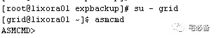
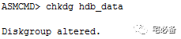
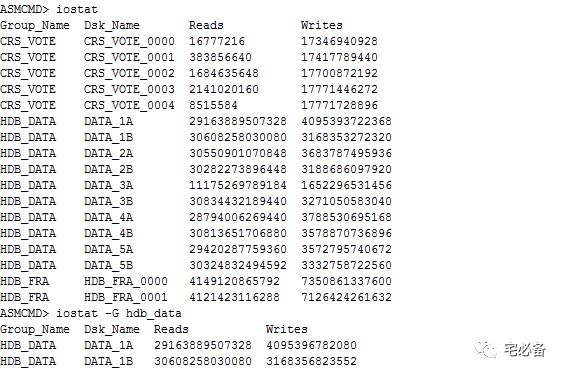
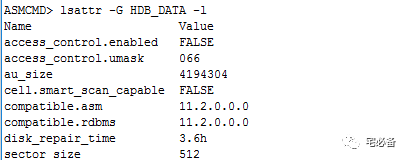
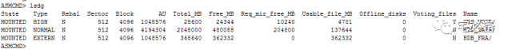
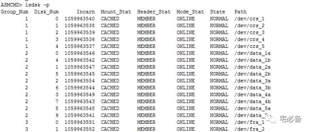
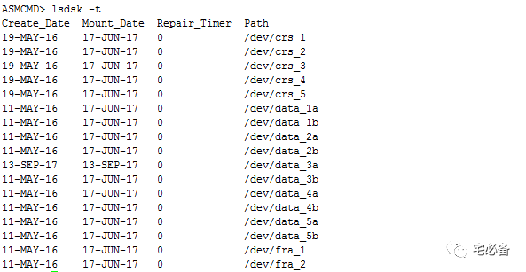
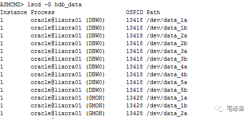
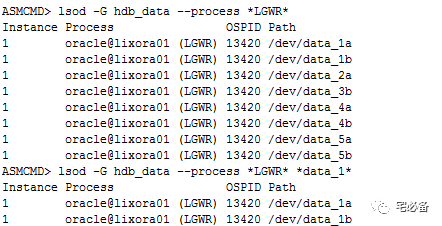

asmcmd管理磁盘组
原创 2017-11-17 Oracle 宅必备
这个专题讲ASM相关的内容
这节讲ASM 的asmcmd命令
asmcmd命令是我们管理ASM的一个命令行工具
我们可以使用help dsget的形式查看帮助
通过grid用户进入

ASM磁盘组相关命令
1.1 chdg
该命令根据一个xml文件更改磁盘组配置
ASMCMD [+] > chdg data_config.xml
1.2 chkdg
该命令检查并且可以修复磁盘组

1.3 dropdg
该命令删除一个磁盘组
-r 表示递归，同时删除文件
-f代表强制删除
ASMCMD [+] > dropdg -r -f data
ASMCMD [+] > dropdg -r fra
1.4 iostat
该命令查看磁盘组的io状态
iostat使用的是V$ASM_DISK_IOSTAT视图

1.5 lsattr
该命令列出磁盘组的属性值

1.6 lsdg
该命令列出磁盘组的相信信息，包括空间等

1.7 lsdsk
该命令列出ASM 磁盘信息
 
1.8 lsod
该命令处于打开状态的ASM磁盘
 
1.9 md_backup
该命令备份一个或多个磁盘组，默认备份所有磁盘组元数据和数据
md_backup /scratch/backup/alldgs20100422
md_backup /scratch/backup/data20100422 -G data
1.10 md_restore
该命令恢从备份文件恢复磁盘组数据
ASMCMD [+] > md_restore –-full –G data –-silent /scratch/backup/alldgs20100422
ASMCMD [+] > md_restore –-nodg –G data –-silent /scratch/backup/alldgs20100422
ASMCMD [+] > md_restore –-newdg -o 'data:data2' --silent /scratch/backup/data20100422
ASMCMD [+] > md_restore -S override.sql --silent /scratch/backup/data20100422
1.11 mkdg
该命令根据XML 配置文件新建一个磁盘组，具体参考官方网站
ASMCMD [+] > mkdg data_config.xml
ASMCMD [+] > mkdg '<dg name="data"><dsk string="/dev/disk*"/></dg>'
1.12 mount
该命令mount一个磁盘组
ASMCMD [+] > mount -f data
ASMCMD [+] > mount --restrict data
ASMCMD [+] > mount -a
1.13 offline
该命令offline磁盘组中的磁盘或者故障组
注意 offline后经过一段时间后会从磁盘组中删除(Drop)
ASMCMD [+] > offline -G data -F failgroup1
ASMCMD [+] > offline -G data -D data_0001 -t 1.5h
1.14 online
该命令online磁盘或者故障组
ASMCMD [+] > online -G data -F failgroup1 -w
ASMCMD [+] > online -G data -D data_0001
1.15 rebal
该命令重平衡一个磁盘组
rebal --power 4 fra
1.16 remap
该命令将磁盘组中一个范围内的的块标记为unusable 并将其里面数据重新分配
ASMCMD [+] > remap DATA DATA_0001 5000-5999
ASMCMD [+] > remap FRA FRA_0002 6230-6339
1.17 setattr
该命令设置磁盘组的属性值
ASMCMD [+] > setattr -G data compatible.asm 11.2.0.0.0
ASMCMD [+] > setattr -G data compatible.rdbms 11.2.0.0.0
1.18 umount
该命令dismount 一个磁盘组
ASMCMD [+] > umount -a
ASMCMD [+] > umount -f data
具体请参考下面链接或点击阅读原文:
https://docs.oracle.com/cd/E11882_01/server.112/e18951/asm_util004.htm#OSTMG94578